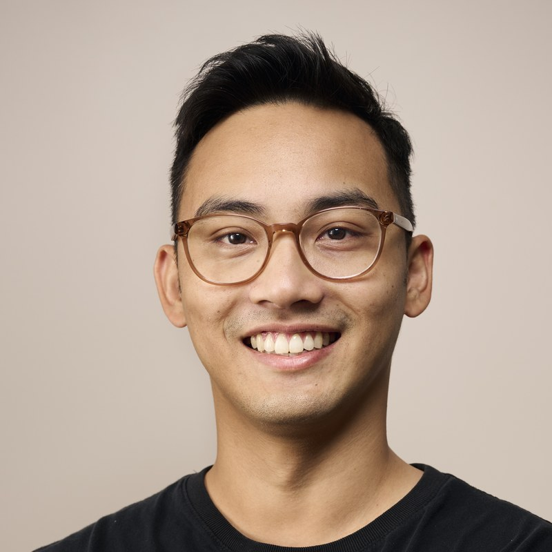

Launched Uber Eats across APAC, and ran strategy and operations at GrabFood (South-East Asia's largest food delivery platform). Built three operating functions from the ground up in Australia since then.
Redesigned sales targets and commission structures, introduced fortnightly commercial pipeline reviews, and upgraded OKR and scorecard tracking infrastructure across the business.
Backbone to 3–4x ARR growthBuilt and led the Strategic Operations function for GrabFood across South-East Asia, running 6 squads against distinct marketplace outcomes at a scale of 500,000+ merchant partners and deliveries per day.
Reliability up 30pp, launch to scaleManaged customer experience and support operations for Uber Eats delivery partners across 7 countries, then drove root-cause investigation as APAC Defect Reduction Champion, working upstream with product and operations.
Double-digit defect rate reduction, multiple countriesFluent in English and Cantonese.
Open to conversations on business operations, growth and scaling challenges.